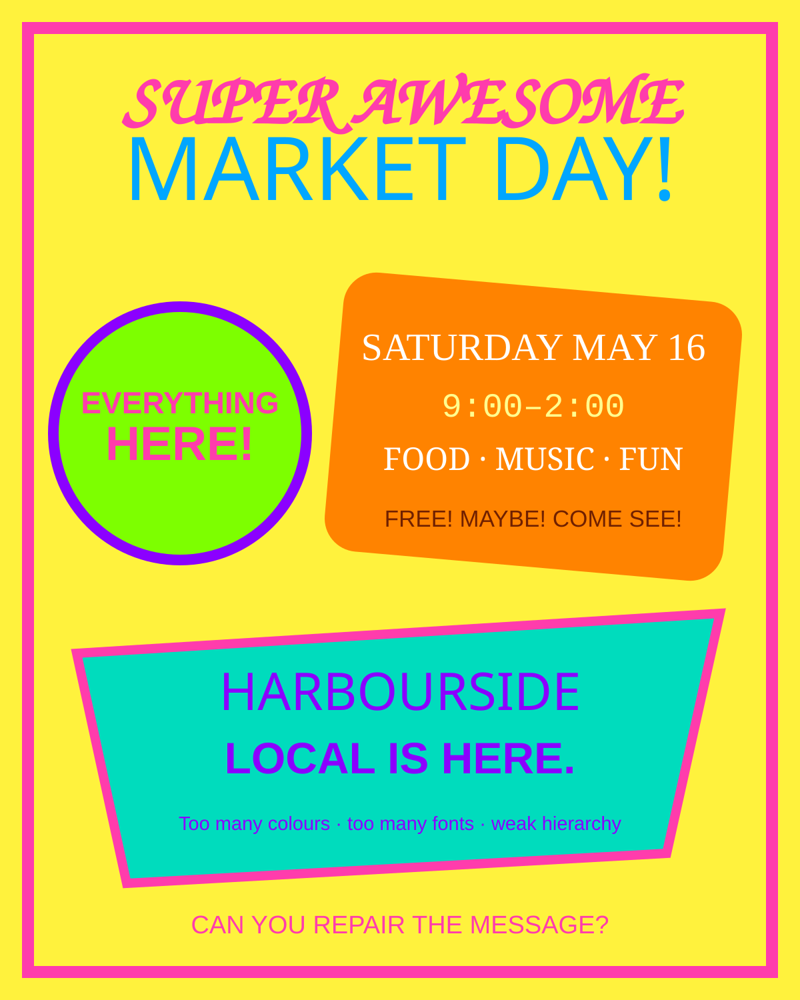

Northwood Coffee
Neighbourhood cafe
Warm, local, honest
Required line: Opening Saturday · 8 AM
A client-led design studio in audience, hierarchy, colour, typography, Photoshop craft and web delivery.

Big question: How can one visual system make a message recognizable and useful?
Product: Choose a fictional client and create a repeatable brand system: style tile, 1080 x 1080 launch graphic and a second-format adaptation. Support changes the scaffold; extension changes the design problem.
Check a day only after you have saved its evidence. Progress stays on this device and never leaves the browser.
Give each design a five-second look. Name the first message you received, then identify the alignment, contrast, hierarchy and proximity decisions that produced it.
Neighbourhood cafe
Warm, local, honest
Required line: Opening Saturday · 8 AM
School esports team
Bold, energetic, competitive
Required line: Tryouts Friday · Room 204
Saturday farmers' market
Fresh, friendly, coastal
Required line: Saturdays · 9 AM-1 PM

A deliberately weak layout makes hierarchy, alignment and spacing problems visible.
Look for: competing focal points · random alignment · weak groupingOriginal classroom diagnostic asset
The same design principles produce different visual voices when audience and purpose change.
Look for: repetition · differentiation · brand voiceOriginal classroom comparison board
Warm local imagery must still leave a deliberate reading path for opening information.
Look for: crop · value control · warm palette · proximityOriginal rights-safe classroom photograph
Energy comes from controlled scale, contrast and direction—not from making everything loud.
Look for: directional hierarchy · high contrast · type roleOriginal rights-safe classroom photograph
A community message needs freshness, legibility and clear event details.
Look for: colour association · image choice · information groupingOriginal rights-safe classroom photograph

Named colour and type roles make later layouts repeatable rather than improvised.
Look for: tokens · hierarchy · consistency · transferOriginal editable classroom template
Repair a weak flyer one principle at a time, then test whether foreground and background colours remain legible. The controls change the same decisions students will make in Photoshop.
Music. Food. A special event. Doors perhaps at seven. Tell everyone. Location to be announced somewhere.
CLICK HERE NOWOpen a day for the full sequence. Each complex action names the location, expected result, purpose, common error and repair.
How can visual decisions make one message recognizable before a logo is explained?
Open slidesRun a five-second gallery test, then repair the weak flyer without changing a single word.
Client brief, audience, hierarchy, alignment, proximity, contrast, accessible colour, type roles, repetition and wordmark construction.
A brand is a repeatable communication system. Hierarchy orders attention; alignment and proximity create relationships; palette and typography establish a consistent voice.
Use the supplied grid, one pre-tested palette and one recommended system-font pairing.
Which decision is doing the most communication work, and what evidence supports that claim?
Create a second valid style direction for the same client and compare the audience effect.
How can photograph and type share one reading path?
Open slidesCompare readable and unreadable text-over-image examples; locate the value conflict and busiest region.
1080 square setup, Place Embedded, Smart Objects, crop, subject position, masks, clipped Curves, safe area, type hierarchy and mark placement.
The image creates subject and mood while type supplies precise meaning. Crop and tonal control reserve space so both systems can perform their jobs.
Use the supplied safe-area guides and recommended crop for the selected client.
What did you change in the photograph so the words could do their job?
Create a second crop with a different focal relationship while preserving the same brand system.
Does the system survive a new format and a real audience test?
Open slidesConduct a silent five-second test before any designer explains the work.
Audience evidence, targeted revision, consistency audit, A4 adaptation, alternate-audience transfer, source logging, export specifications and rationale.
A brand system proves itself through transfer. Some spatial decisions must change with format, while palette, type roles, tone and identity remain recognizably consistent.
Adapt only the hierarchy and spacing; keep the approved palette, type roles and mark fixed.
What changed between formats, what stayed consistent and why?
Reposition the brand for a second audience and defend which system elements needed to change.
The full-length tutorials remain optional. Classroom cues use short excerpts and a viewing question.
Preview and show one comparison only. Viewing question: How can identical assets communicate different ideas?
PiXimperfect · 1:00 excerptStop at 2:13. Viewing question: Name one part of the workspace and explain what job it controls.
Adobe · 4 minUse the complete four-minute tutorial. Viewing question: Why can a mask be repaired while erased pixels cannot?
Nour Art · 0:32 excerptStop at 0:48. Viewing question: Which decisions happened before the editing began?
The product grows across three classes. Students do not repeat one layout: they establish a system, apply it to a launch graphic, then prove the system can survive audience testing and a new format.
Choose a client, identify audience and message, repair the weak-flyer principles, then complete the palette and type hierarchy on the style tile.
Create the 1080 × 1080 launch graphic with an editable image, clear hierarchy, restrained mark and consistent brand system.
Run a silent five-second audience test, revise the clearest mismatch, confirm sRGB/size and submit the rationale plus process evidence.
Use the supplied grid, recommended type pairing and accessible palette to create the complete style tile and launch graphic.
Create an original wordmark, palette and layout, then adapt the launch graphic to A4 without losing hierarchy.
Reposition the same brand for a second audience or campaign moment and justify what remains consistent and what changes.
Choose a fictional client and create a repeatable brand system: style tile, 1080 x 1080 launch graphic and a second-format adaptation. Support changes the scaffold; extension changes the design problem.
Create electronic communication solutions that persuade or entertain an audience.
Understand social and environmental impacts of communication technology.
Apply principles and elements of design.
Use typography appropriately in graphic design.
Communicate a message by manipulating images and words.
Use appropriate settings for web-image output.
{kind=link}